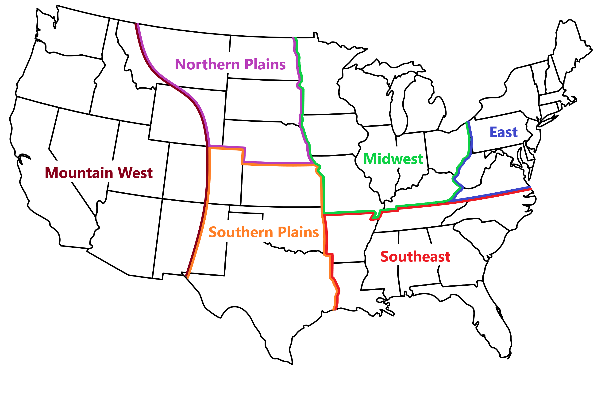

Welcome New and Returning Users!
Here is general info for the contest in 2026:
- Practice Week -- March 16th to March 20th (scores will not count towards 2026 results)
- Season 1 -- March 23rd to May 1st
- Season 2 -- May 4th to June 12th
Expect to see a reminder email about the start of forecasting over the weekend of March 14th-15th.
Don't forget to make sure our email isn't filtered by your spam (gmail likes to put us in "promotions").
Have no fear new folks, we send a single email a week with a breakdown of new scores.
Spamming you is a lot of work, and we'd rather spend our time forecasting and running verification!
If you have questions, please check out our FAQs page and/or send us an email.
For folks who are new to severe weather forecasting or want to brush up, our colleagues in the Iowa State Student Chapter of the American Meteorological Society are preparing a Forecasting How-To Page [it will be linked here as soon as possible].
Best of luck everyone, and happy forecasting!
-TTC Admins
The Five W's
Who:
This contest is open to anyone and everyone that wants to challenge themselves to improve their forecasting skill in a fun and competitive setting. This contest is free to all users!
What:
We submit forecasts based on whether you think a tornado is likely to occur. If you think a tornado is likely to occur, you will be asked to enter latitude/longitude coordinates, and whether you think an EF2+ is likely. We post verification plots and tables based on the resulting weather, as well as tracking scores on stats sheets and leaderboards!
When:
- We forecast during the Monday-Friday work week from roughly mid-March, to mid-June.
- Forecasting is split between 2 seasons. The seasons switch around the beginning of May. When we start Season 2, the scoreboards reset! At the end of Season 2, cumulative results are calculated.
- Forecasts can be submitted by registered users as many times as they wish within the designated Forecast Window which runs from 00 zulu to 16 zulu time (Day 1).
- Your forecast should focus on the upcoming day running from 1630 zulu (Day 1) to 12 zulu time (Day 2). This is done to match the Storm Prediction Centers Day 1, 1630z Convective Outlook.
- You will see the "Today's Forecast" page update with a map and table of where everyone forecasted around midday.
- Several days later, after reports and damage assessments have been conducted, we will score everyone's forecasts.
If you are confused about how the forecast and verification periods work, please check out our entry on the FAQ's page: "When do we forecast, and how does the verification period work?"
Where:
Forecasts should be submitted for lat/lons within the continental United States. We also break down the contest by regions, this allows forecasters to explore their forecasting accuracy in different climactic environments/topography. The regions do not affect scoring.

Why:
Our Mission Statement
This contest was designed to provide an educational experience in tornado forecasting through an objective, cooperative, and competitive environment. This is achieved by bringing together forecasters from all walks of life within the field of meteorology, to discuss/refine their tornado forecasting techniques, submit forecasts, and receive verification. The ultimate goal of the contest is to help current and future professionals improve public safety.
What's New in 2026?
This year, we have increased the functionality of our site.
- Registration is being handled by a new database. This will be the last time you will ever need register for TTC!
- Forecast submissions are more integrated and the built-in map now inputs lat/lons on your click!
With the dynamic handling of registrations, and locking forecasting behind a login, work behind the scenes will be greatly streamlined This should help us get things done in a more timely manner!
The History of TTC
This contest was started in 2017 as a way for a handful of Iowa State University students to practice their forecasting skills while enjoying a bit of competition. We started with about 15 people, a text message group, and rudimentory plots. From there, we expanded into the use of GIS, python coding, and website hosting. Growth isn't always easy, and meteorology folks are an interests group of people to work with, but we are happy to say that we consistently have hundreds of users year-on-year and are always looking to reach more folks and improve the TTC experience!